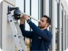
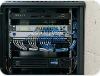
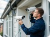

Protección preventiva
Supervisa accesos, perímetros y sectores sensibles como parte de una estrategia integral de seguridad. Las cámaras no eliminan por sí solas todos los riesgos.
Diseñamos e implementamos sistemas de cámaras de seguridad para empresas, comercios, comunidades y propiedades particulares.
Un sistema CCTV bien diseñado ayuda a supervisar áreas importantes, consultar grabaciones ante incidentes y mejorar la visibilidad de lo que ocurre en una propiedad. Su utilidad depende de una ubicación adecuada, iluminación, almacenamiento y operación responsable.
Supervisa accesos, perímetros y sectores sensibles como parte de una estrategia integral de seguridad. Las cámaras no eliminan por sí solas todos los riesgos.
Las grabaciones pueden ayudar a reconstruir eventos, siempre que la imagen sea útil y el sistema esté grabando correctamente.
Consulta imágenes desde un teléfono o computador mediante accesos autorizados, según el equipamiento y la conectividad disponibles.
Observa entradas, estacionamientos, bodegas y otras áreas definidas durante el levantamiento técnico.
Seleccionamos la tecnología según el lugar, la infraestructura existente, las necesidades de grabación y el presupuesto del proyecto.

Instalación de cámaras IP y analógicas para interiores, exteriores, accesos, estacionamientos y áreas de circulación.

Configuración de NVR, DVR, discos duros, horarios de grabación y reproducción de imágenes.
Configuración de acceso remoto y permisos para usuarios autorizados.

Diagnóstico de fallas, revisión de conexiones, cámaras, almacenamiento y configuración.
Cuéntanos qué áreas deseas supervisar. Podemos evaluar una instalación nueva, una ampliación o una falla en tu sistema actual.